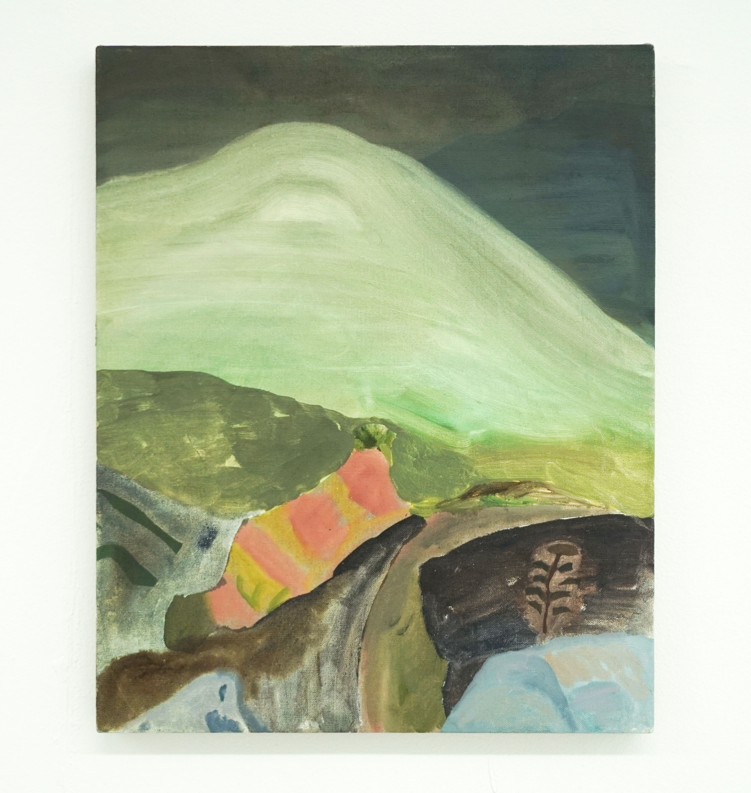
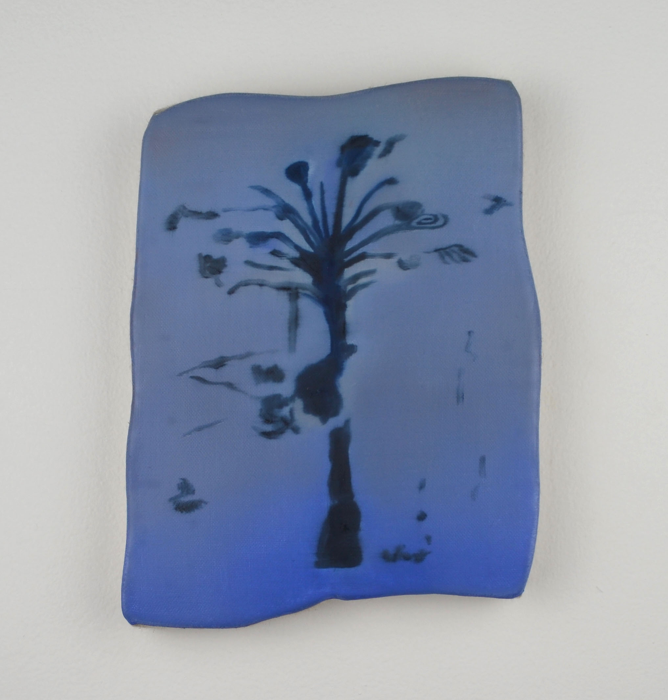

Susan Aparicio

Justine Rivas
Tyler Christopher Brown

Luz Carabaño
Saj Issa
Jackie Amézquita
DISCIPLINE
GALLERIES
ARTISTS


![First out of sixteen pages of the official List of Deaths in ICE Custody.
Data from: October first, two thousand and three, to June fifth, two
thousand and seventeen. The first page contains the names of seven
people.
This list has eleven cells. Each cell has a title: cell number one
"Number", cell number two "ALIEN NAME", cell number three "SEX",
cell number four "DATE OF BIRTH", cell number five COUNTRY OF
BIRTH, "cell number six "DATE OF DEATH", Cell number seven
"LOCATION OF DEATH", cell number eight "LOCATION OF LAST
DETENTION CENTER", cell number nine IHSC STAFFED, cell
number ten "FACILITY TYPE(DETAILED)", and last cell FINAL
CAUSE OF DEATH.
The "ALIEN NAME" cells containing "Vicente CACERES Maradiaga,
Alonzo Sergio LOPEZ, and Osmar Epifanio GONZALES Gadda are
outline blue. Alien Name Roger RAYSON cell is highlighted yellow, and
Alien Name cell Raquel CALDERON De Hidalgo cell is Highlighted
green.](images/LDIC1_7.JPG)